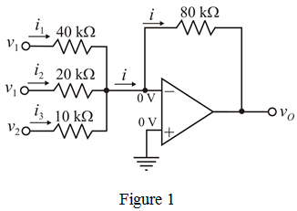

Choose the value of resistor .
Recall equation (5).
Substitute  for
for  in the equation.
in the equation.
Recall equation (3).
Substitute  for
for  in the equation.
in the equation.
Recall equation (4).
Substitute for  in the equation.
in the equation.
Refer to Weighted summer in Figure 2.10 in the textbook.
Write the output voltage expression for the weighted summer circuit.
…… (1)
The output voltage is,
…… (2)
Equate equations (1) and (2).
…… (3)
…… (4)
…… (5)
Choose the value of resistor .
Recall equation (5).
Substitute for in the equation.
Recall equation (3).
Substitute for in the equation.
Recall equation (4).
Substitute for in the equation.
The designed circuit is shown in Figure 1.
